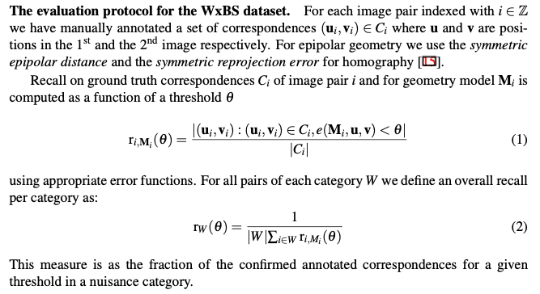

Calculates percentage of the ground truth correspondences, consistent with estimated fundamental matrix in a sense of the symmetrical epipolar distance. This is evaluation from the WxBS paper, see the screenshot below: 
pts1 = np.stack([np.arange(5), np.arange(5)], axis=-1)pts2 = np.array([[0,0], [1,1.1], [2,3], [2.5,2], [4.1,6]])corrs = np.concatenate([pts1, pts2], axis=1)# Generate F for the purely horizontal shift between the cameras F = np.array([[0.0, 0.0, 0.0], [0.0, 0.0, -1.0], [0.0, 1.0, 0.0]])ths = np.arange(5)recall = fraction_of_gt_corrs_consisent_with_F(F, corrs, ths)plt.figure()plt.plot(ths, recall, '-x')plt.ylim([0,1.05])plt.xlabel('Thresholds')plt.ylabel('Recall on GT corrs')plt.grid(True)
/opt/homebrew/Caskroom/miniforge/base/envs/python39/lib/python3.9/site-packages/ipykernel/ipkernel.py:283: DeprecationWarning: `should_run_async` will not call `transform_cell` automatically in the future. Please pass the result to `transformed_cell` argument and any exception that happen during thetransform in `preprocessing_exc_tuple` in IPython 7.17 and above.
and should_run_async(code)